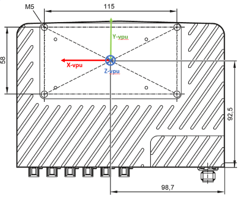

Camera Mounting
The type of camera and mounting position of the camera will directly influence the performance of ODS. However, the ODS detection range is limited to a maximum of 4 m with the current Firmware version (FW 1.0.14). Based on the camera head chosen, mounting height is the second most important factor for influencing detection range.
Additionally, visual odometry has to be enabled and functional in firmware 1.0.14 to estimate the AGVs / ARMs egomotion. For visual odometry, a large portion of the floor should be present in the field of view of at least one camera. To achieve this we recommend the mounting height should be in the range of 250 mm to 700 mm from the ground. To know more about the factors that could influence the performance of ODS and to start benchmarking please refer to this document.
Coordinate systems
For the camera heads and VPU calibration, it is very important to know the position of the coordinate system’s origin of respective hardware components. These coordinate reference frame origins should be considered as a reference to camera heads / VPU while measuring the mounting positions on the AGV / AMR.
The camera head’s coordinate system origin is in the center of four mounting screws at the mounting plane of the head as shown in the figure below.

The VPU’s coordinate system origin lies at the center of the VPU mechanical interface, i.e. also the center of four mounting screws at the mounting plane.

Cable management
Cable management is essential for AGVs / AMRs for improved safety, reliability, efficiency and maintenance. Therefore we recommend the following tips for cable management.
Before installing the cables, plan the layout of the cables and the paths. Take considering of the power source, control units or any other interfaces used in AGV / AMRs. This reduces the of damage to the cables and EMV & ESD interference.
Using the right size and type of cable is an effective way to keep the cables organized: please get in touch with your ifm sales engineer for more information about drag chain compatible HFM cables and HFM / Fakra cable adapters and different cable lengths.
Labeling the cables is very important to keep track of what they are and where they end up. This helps to troubleshoot any issues that can arise and makes it easier to perform maintenance / repairs. Ifm HFM cables (E3R1xx) cables come pre-labeled for their respective 2D and 3D imager data stream cables.
Strain relief can help to prevent damage to your cables by reducing the amount of tension or pulling force that is applied to them. This is especially important in areas where the cables may be subjected to movement and / or vibration.
These cables have an IP rating of IP54, i.e. the O3R camera head connector FAKRA plug, which is protected against limited ingress of dust and water but is not completely waterproof.
The FAKRA connector to the VPU housing is rated at IP50 - te same as the VPU itself.
It’s important to note that while IP54-rated cables offer some level of protection against dust and water, they may not be suitable for use in extremely wet or dusty environments. Please see the respective norms as a part of the cable specification sheets online
Cleaning camera heads
It is important to clean the camera heads regularly because any dirt, dust, or fingerprints on the lens or front of the camera housing can interfere with the accuracy of the camera’s measurements. The camera heads work by emitting a light signal and measuring the time it takes for the signal to reflect back, which allows the camera to calculate the distance between the camera and the object it is measuring.
If there is dirt or dust on the lens or sensor, it can scatter the light signal and cause inaccuracies in the measurements. This may lead to errors in the data captured by the camera, which can impact the performance of any systems that rely on that data, such as ODS.
Regular cleaning can help to ensure that they are operating at their best performance and producing accurate and reliable data. The best practices to clean the cameras are as follows.
Use a clean, lint-free cloth: When cleaning the camera, it is important to use a clean, lint-free cloth that will not scratch or damage the lens or sensor. Microfiber clothes are a good choice.
Use compressed air or a blower brush: To remove any loose dust or dirt, you can use compressed air or a blower brush to gently blow away any debris from the lens and sensor.
Avoid using water or harsh chemicals: Do not use water or harsh chemicals to clean the camera, as this can damage the lens or sensor.
Clean regularly: To maintain optimal performance, it is recommended to clean the camera heads regularly, depending on the environment in which they are used. In dusty or dirty environments, more frequent cleaning may be necessary. We recommend to implement a weekly cleaning maintenance for non-dusty environments. For dusty environments a daily cleaning maintenance schedule is advised.